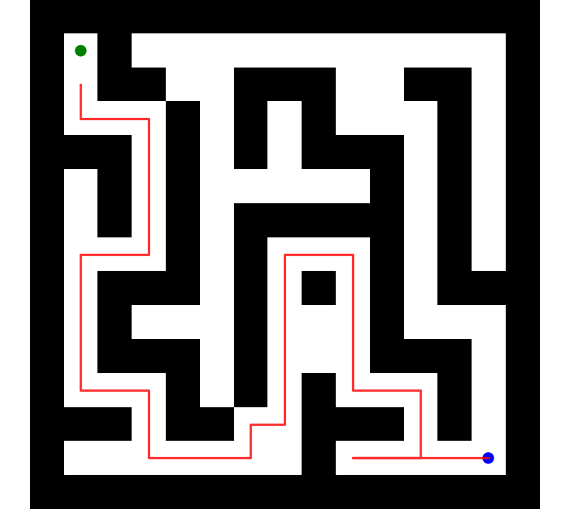
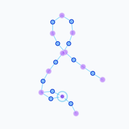
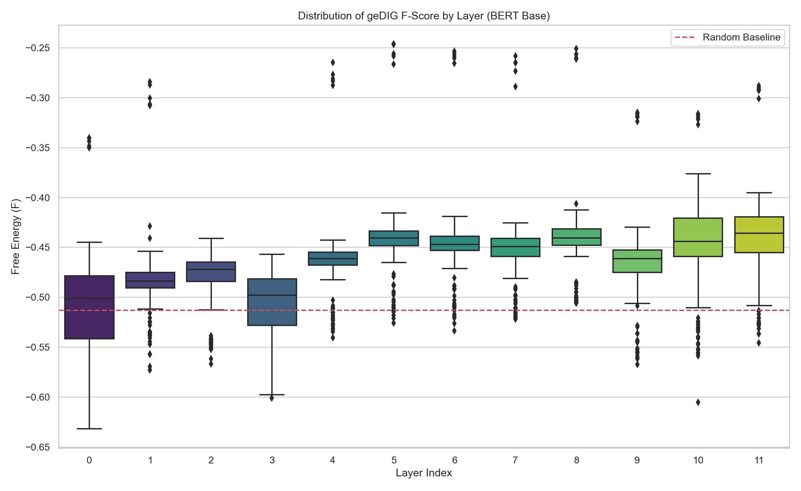

— Gauge what Knowledge Graph needs. —
A Unified Gauge for Controlling Exploration and Integration in Dynamic Knowledge Graphs
動的知識グラフが検索すべき「何を（What）」は GraphRAG・Self-RAG が最適化してきた。だが新情報を「いつ（When）」構造として統合し、いつ探索を続けるか——その原理的な基準は無かった。
geDIG は自由エネルギー原理（FEP）と最小記述長（MDL）を操作的に橋渡しし、このトレードオフを単一スカラー F で評価する。
エージェントは F を用いて 2 つのゲートを事象駆動的に開閉し、探索モードと統合モードを自律的に切り替える。
構造項 (ΔEPC − λγΔSP) ↔ エネルギー E、λΔH ↔ 温度×エントロピー T·S（T = λ：情報温度）。層別 F 推移は「高温→低温への冷却＝アニーリング過程」と読める。
部分観測迷路でエージェントが築く認知地図は動的知識グラフの一形態。周囲1マスしか見えず、「全通路を記憶」か「分岐点のみ記憶」かの選択を迫られる。

(a) 実空間 ｜ 15×15 迷路の探索軌跡
(b) 内部表現 ｜ 認知地図グラフ位置・相対移動・通行可否・訪問回数・success/goal を符号化（weights: wall 6 / visit 4）。クエリとの重み付き距離で候補分布を生成する。ゴール座標・正解経路は与えない——移動履歴のみから記憶接続を選ぶ。
| 手法 | 成功率 | 平均ステップ | 圧縮率 |
|---|---|---|---|
| 15×15 （n=100, max=250） | |||
| Random Walk | 0.75 ±.08 | 105.8 | — |
| Greedy DFS | 0.99 ±.03 | 82.1 | — |
| geDIG | 0.98 ±.03 | 89.6 | 98% |
| 25×25 （n=60, max=500） | |||
| Random Walk | 0.40 ±.12 | 242.2 | — |
| Greedy DFS | 0.95 ±.06 | 242.2 | — |
| geDIG | 0.75 ±.11 | 254.1 | 99% |
geDIG は「必要なトポロジー骨格」のみを選択的に記憶する。vs Random Walk は McNemar 検定で有意（15×15: p<10⁻⁵）。
Attention 行列 Aij を関係グラフと見なすと意味的 KG が得られる（BERT 12層・SST-2・n=200）。同じ F の3項を Attention 上で定義：

Layer 0–1 vs 10–11 は有意（paired t(199)=32.6, p<10⁻⁸⁰, Cohen's d=2.31）。ヘッドは「探索担当／統合担当」に機能分化。
| α | Accuracy (%) | Δ (pp) |
|---|---|---|
| 0（基準） | 86.00 ±.53 | — |
| 0.001 | 86.33 ±.46 | +0.33* |
| 0.01 | 86.27 ±.70 | +0.27 |
| 0.1 | 85.93 ±1.1 | −0.07 |
| 1.0 | 78.93 ±1.6 | −7.07 |
*paired t-test p=0.038。逆U字＝微弱な正則化は改善、過剰は悪化。適切な「構造化圧」が汎化を引き出す因果的証拠。学習済み Transformer は既に F 最小化に近い。
① ΔSP → β₁ への位相拡張。近道（ΔSP）を第一ベッチ数 β₁に一般化し、ループ・短絡を位相不変量として扱う。
② GraphRAG / Self-RAG への応用。AG/DG ゲートで現行 RAG の「いつ検索し、いつ構造化するか」を原理的に自律制御する。